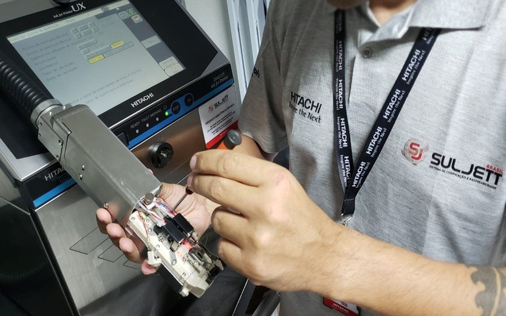
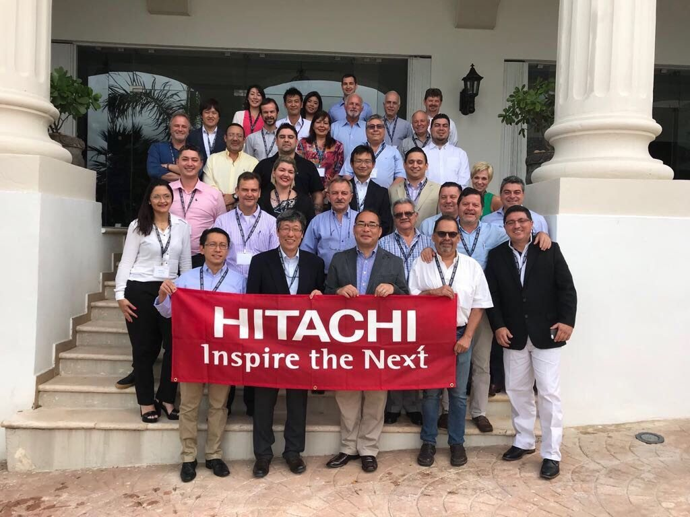

Rastreabilidade
Cada gota de tinta com código S10, cada lote documentado, cada equipamento conectado ao ERP.
Somos a distribuidora oficial da Hitachi Industrial Equipment Systems no Sul e Nordeste do Brasil. Nossa engenharia, nossos técnicos e nosso estoque de insumos originais existem para manter a sua linha de produção rodando — sem parada, sem código pirata, sem proposta genérica.
A Suljett do Brasil nasceu em 2008 com uma decisão clara: trazer para a indústria brasileira o padrão Hitachi de codificação industrial, com equipamento original, insumo original e suporte técnico de gente que conhece a linha de fábrica por dentro.
Em quase duas décadas, passamos por mais de mil chãos de fábrica — de avícolas e laticínios no Sul a refinarias de bebidas no Nordeste — e o que aprendemos virou método. Hoje, atendemos clientes dos quatro grandes setores reguladores do país: alimentos, bebidas, farmacêutico e automotivo.
Nossas soluções giram em torno de quatro pilares interligados. Eles existem para que o seu produto saia da linha codificado, inspecionado e dentro da norma — sem retrabalho.
Cada gota de tinta com código S10, cada lote documentado, cada equipamento conectado ao ERP.
Integração nativa da codificadora com CLP, MES e empacotadora. Parada zero por erro de operador.
Detectores Fortress e câmeras de visão. O que não está conforme não passa.
CIJ, TIJ, TTO e Laser Hitachi originais para cada substrato, velocidade e norma.
Implementar soluções no mercado industrial através da qualidade, tecnologia e inovação dos nossos produtos — com foco na agilidade e excelência no atendimento, superando as expectativas dos nossos clientes.
Expandir nosso plano de negócios para todo o território nacional, transformando a Suljett em sinônimo de excelência no atendimento ao cliente industrial.
A Suljett do Brasil é certificada ISO 9001, com sistema de gestão da qualidade auditado e renovado anualmente. Cada chamado técnico, cada lote de insumo entregue e cada equipamento instalado segue um procedimento documentado — auditável pelo seu setor de Qualidade quando você precisar.
"A Suljett do Brasil é uma empresa socialmente responsável, que efetua as obrigações aplicáveis, visando fornecer produtos e serviços que atendam às necessidades dos seus clientes — buscando a melhoria contínua e excelência no atendimento."
Nossa malha logística e técnica cobre Sul e Nordeste do Brasil. Cada unidade tem estoque permanente de insumos Hitachi originais e técnicos certificados pela própria Hitachi.
Estr. João Passuelo, 342
Vila Nova · CEP 91740-550
R. Dona Francisca, 4808
Santo Antônio · CEP 89218-112
Rod. Dr. Ib Gatto M. Falcão, 500
Barra Nova · CEP 57160-000
O setor de SDC da Suljett existe por uma razão única: garantir que o equipamento que você comprou continue entregando o que prometemos no dia da assinatura — em 1 mês, em 1 ano, em 10 anos.
A equipe SDC monitora ativamente o ciclo de vida de cada codificadora instalada, programa visita técnica preventiva e abre o canal direto com a engenharia da Hitachi quando o caso pede.

A Suljett é representante oficial de duas das maiores referências mundiais em codificação industrial e inspeção de qualidade. Não somos revendedora — somos distribuidora autorizada, com técnicos certificados pelos fabricantes.
Líder mundial em codificação CIJ, com 100 anos de engenharia japonesa. Distribuímos toda a linha CIJ, TIJ, TTO e Laser para o Sul e Nordeste — equipamento original com insumos rastreáveis código S10.
Líder norte-americana em detecção de metais e inspeção por raio-X para indústria alimentícia e farmacêutica. Distribuímos a linha Fortress no Brasil, garantindo conformidade regulatória do seu setor.
Acreditamos que o crescimento da Suljett está diretamente ligado ao desenvolvimento das pessoas que constroem essa história junto com a gente. Por isso, estamos sempre em busca de novos talentos que queiram construir uma carreira sólida em um ambiente de inovação e tecnologia industrial.

Agende uma visita técnica gratuita. Um engenheiro de aplicação Suljett vai até a sua linha, avalia o substrato, a velocidade e a regulação do seu setor, e indica a solução Hitachi correta — sem cotação genérica, sem catálogo de uma vez só.